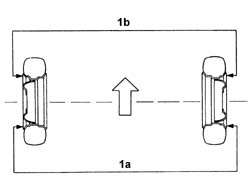
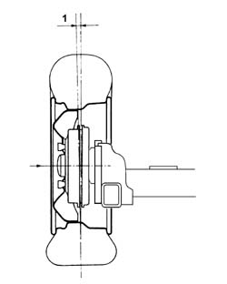

4450A40 rear wheel geometry - check using optical equipment
- Path
- Procedures > 44 SUSPENSION AND WHEELS > 4450 WHEELS AND HUBS > 4450A wheel geometry > 4450A40 rear wheel geometry - check using optical equipment
- Kind
- repair procedure (removal / refitting; the operation number is the code)
- Applies to
- all engines; all production periods
- Interactive page
- https://sloeber94.github.io/elrnDB-fDbl/en/#/2584767
Applies to: all engines; all production periods
The rear wheel geometry should be checked after having subjected the components which affect the wheel geometry to the following checks:
tyre inflation pressure;
the eccentricity and the orthogonality of the wheel rims should not exceed 3 mm;
wheel bearing end float;
Carry out the preliminary checks on the vehicle and remove any loads transported.
Position the vehicle (in running order) on the lift with test equipment.
1. Check that the toe in (1a-1b) is within the recommended limits.
The toe in figures refer to standard A vehicles = unladen vehicle including spare wheel, tools, accessories and supplies (full fuel tank).
 | Measurement | Value | |
|---|---|---|---|
- | Rear wheel toe in (mm) | 0 ± 1 | |
Standard A (-) | - | ||

Applies to: all engines; all production periods
Carry out the preliminary checks on the vehicle and remove any loads transported.
Position the vehicle (in running order) on the lift with test equipment.
1. Check that the rear wheel camber is within the recommended limits.
The camber figures refer to standard A vehicles = unladen vehicle including spare wheel, tools, accessories and supplies (full fuel tank).
| Measurement | Value | |
|---|---|---|---|
- | Rear wheel camber (Gradi) | 0 ± 1 | |
Standard A (-) | - | ||
